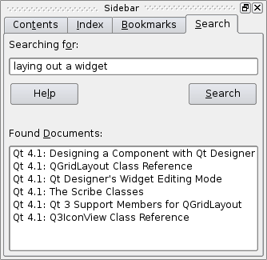

| Home · All Classes · Main Classes · Grouped Classes · Modules · Functions |
This document introduces Qt Assistant, a tool for presenting on-line documentation. It also introduces the Qt Reference Documentation which is accessible using Qt Assistant, or with a web browser. The document is divided into the following sections:
The documentation for the Qt library is written in-line in the .cpp files by the developers themselves. The documentation team revises the documentation to ensure that it is accurate and usable, and to provide quality control. The documentation team also writes the larger texts, such as the class descriptions that introduce a class along with the concepts the class uses, as well as introducing the functions and properties that the class provides.
The documentation focuses on the API rather than the internals, since we make great efforts to keep our API consistent and compatible with each new version, but we may change the internals considerably to improve performance and enhance functionality.
The Qt Reference Documentation consists of almost 1,500 HTML pages (over 2,500 printed pages). The overwhelming majority of pages document Qt classes. Since developers differ in the way they think and work we provide a variety of approaches to navigating the documentation set:
No matter where you find yourself in the Qt documentation, you will find extensive cross-referencing. Even snippets of example code contain clickable links, so that for example, if you come across a class declaration in a code example, the class name will be a clickable link to the class's documentation.
In addition to the class documentation some of Qt's modules have extensive descriptions, and there are many overview documents which describe various aspects of the Qt library; all these are linked from the reference documentation home page. There are also two tutorials and numerous example programs in the examples subdirectory of the Qt distribution.
Under Windows, Qt Assistant is available as a menu option on the Qt menu. On Unix, run assistant from an xterm.
When you start up Qt Assistant, you will be presented with a standard main-window style application, with a menu bar and toolbar. Below these, on the left hand side is a navigation window called the Sidebar, and on the right, taking up most of the space, is the documentation window. By default, the Qt Reference Documentation's home page is shown in the documentation window.
Qt Assistant works in a similar way to a web browser. If you click underlined text (which signifies a cross-reference), the documentation window will present the relevant page. You can bookmark pages of particular interest and you can click the Previous and Next toolbar buttons to navigate within the pages you've visited.
Although Qt Assistant can be used just like a web browser to navigate through the Qt documentation set, Qt Assistant offers a powerful means of navigation that web browsers don't provide. Qt Assistant uses an intelligent algorithm to index all the pages in the documentation sets that it presents so that you can search for particular words and phrases.
To perform an index search, click the Index tab on the Sidebar (or click Ctrl+I). In the 'Look For' line edit enter a word, e.g. 'homedirpath'. As you type, words are found and highlighted in a list beneath the line edit. If the highlighted text matches what you're looking for, double click it, (or press Enter) and the documentation window will display the relevant page. You rarely have to type in the whole word before Qt Assistant finds a match. Note that for some words there may be more than one possible page that is relevant.
Qt Assistant also provides full text searching for finding specific words in the documentation. Documents with the highest occurrences of the word that you are looking for appear first, and every occurrence of the word within the documentation is highlighted.
Qt Assistant can be customized by creating profiles, a collection of documentation. Profiles can be created for your own use, or for an application you will distribute. With profiles, you can select which documentation you want the end user of your application to be able to view.


The sidebar provides four ways of navigating documentation:
If you want the documentation window to use as much space as possible, you can easily hide or show the Sidebar. If the Sidebar is showing, press Ctrl+T, Ctrl+I, Ctrl+B, or Ctrl+S to hide it. If the Sidebar is hidden, press Ctrl+T to show it on the Contents tab, or press Ctrl+I to show it on the Index tab (with the focus in the 'Look For' line edit box), or press Ctrl+B to show it on the Bookmarks tab, or press Ctrl+S to show it on the (full text) Search tab.
The Sidebar is a dock window, so you can drag it to the top, left, right or bottom of Qt Assistant's window, or you can drag it outside Qt Assistant to float it.

The documentation window offers a feature for viewing documentation by enabling you to create tabs for each documentation page that you view. Click the Add Tab button and a new tab will appear with the page name as the tab's caption. This makes it convenient to switch between pages when you are working with different documentation. You can delete a tab by clicking the Close Tab button located on the right side of the documentation window.
The toolbar provides fast access to the most common actions.
The remaining toolbar buttons are bookmarks and will vary depending on your configuration.
This menu also has additional items; these are pre-defined bookmarks that vary depending on your configuration.
This menu may have additional items, i.e. any bookmarks that you have already made. If you want to delete a bookmark go to the Bookmarks tab on the Sidebar.
This dialog is platform-specific. It gives access to various printer options and can be used to print the current page.
This dialog is used to find text in the current page. Enter the text you want to find in the Find line edit. If you check the 'Whole words only' checkbox, the search will only consider whole words, i.e. if you search for 'spin' with this checkbox checked it will not match 'spinbox', but will match 'spin'. If you check the 'Case sensitive' check box then, for example, 'spin' will match 'spin' but not 'Spin'. You can search Forward or Backward from your current position in the page by clicking one of the Direction radio buttons. Click the Find button to search (or search again), and click the Close button to finish.

Qt Assistant provides a powerful full text search engine. To search for certain words or text, click the 'Search' tab in the sidebar. Then enter the text you want to look for and press Enter or click Search. The search is not case sensitive, so Foo, fOo and FOO are all treated as the same. The following are examples of common search patterns:
The wildcard (*) character cannot be used within quotes.
The list of documents found is ordered according to the number of occurrences of the search text they contain, therefore those with the highest number of occurrences appearing first. Simply click any document in the list to display it in the document window.
If the documentation has changed, i.e. if documents have been added or removed, Qt Assistant will reindex.
Qt Assistant can be customized by adding and removing documentation from its documentation set. In addition, Qt Assistant introduces the profiles option, which enables its properties to change, for example, the default startup page, and application icon.
When it is started without any options, Qt Assistant displays a default set of documentation. When Qt is installed, the default documentation set in Qt Assistant contains the Qt reference documentation as well as the tools that come with Qt, such as Qt Designer and qmake.
Documentation can be added or removed from Qt Assistant by adding and removing the content files. The format of the content files are specified below. To add a content file, type the following command line option: -addContentFile docfile. To remove a content file from the default set, type the following command line option: -removeContentFile docfile. For example:
1: > assistant -addContentFile file.dcf 2: > assistant 3: > assistant -removeContentFile file.dcf
In line one, we add the content file file.dcf. In line two, we start Qt Assistant. The default set will now be extended with the doc file file.dcf. In line three we remove the file file.dcf from the default documentation set so that subsequent use of Qt Assistant will not contain this file.
The Documentation Content File must contain the documentation's table of contents and all important keywords for the index. In addition, it may inherit an icon for the documentation which is displayed in the Qt Assistant toolbar. You can also specify an extra directory path for additional images used in the documentation.
An example of a content file that uses all the available tags and attributes is shown below:
<assistantconfig version="3.2.0">
<DCF ref="demo.html" icon="handbook.png" imagedir="../img/"
title="Development Demo Handbook">
<section ref="./chap1/chap1.html" title="Chapter1">
<section ref="./chap1/section1.html" title="Section1">
<keyword ref="./chap1/section1.html#foo">foo</keyword>
<keyword ref="./chap1/section1.html#bla">bla</keyword>
<section ref="./chap1/section1.html#subsection1" title="Subsection 1"/>
<section ref="./chap1/section1.html#subsection2" title="Subsection 2"/>
<section ref="./chap1/section1.html#subsection3" title="Subsection 3"/>
</section>
<section ref="./chap1/section2" title="Section2">
<section ref="./chap1/section2.html#subsection1" title="Subsection 1"/>
<section ref="./chap1/section2.html#subsection2" title="Subsection 2"/>
<section ref="./chap1/section2.html#subsection3" title="Subsection 3"/>
</section>
</section>
<section ref="./chap2/chap2.html" title="Chapter2">
<keyword ref="./chap2/chap2.html#foo">foo</keyword>
<section ref="./chap2/section1.html" title="Section1"/>
</section>
</DCF>
</assistantconfig>
Sections may be nested as deeply as necessary. All references should be related.
Note that any keyword tags for a given section must appear before any sections nested within the given section.
The paths in the refs attribute are always written Unix-style (forward slashes) and are relative to the location of the documentation content file itself.
Since the introduction of the new root tag assistantconfig in the fileformat from Qt version 3.2.0, it is possible to specify multiple DCF tags in one file. Note that the old document contents file format, used up to Qt 3.2 is still valid.
Profiles enable Qt Assistant to act as a specialized help tool for displaying documentation for applications. With profiles, the documentation writer can change properties such as Qt Assistant's title, application icons, and 'about' dialogs. In addition, profiles can be used to run specialized documentation sets that are separate from the Qt docs. Qt Assistant can be customized by changing the following properties:
To define a profile, one needs to specify a Qt Assistant Document Profile, usually abbreviated .adp. The profile is an extension of the Documentation Content File described above. We add a profile tag containing property tags to the format.
An example of a document profile file is shown below:
simpletextviewer.adp
To use a profile, run Qt Assistant with the option -profile filename. This will load the profile specified in the file and will customize Qt Assistant accordingly. For example, to run Qt Assistant with the example file above, simpletextviewer.adp, we would run the command as follows:
> assistant -profile simpletextviewer.adp
See the Simple Text Viewer example in the Qt distribution for a demonstration on how to use Qt Assistant with profiles for your own applications.
| Copyright © 2008 Trolltech | Trademarks | Qt 4.3.5 |